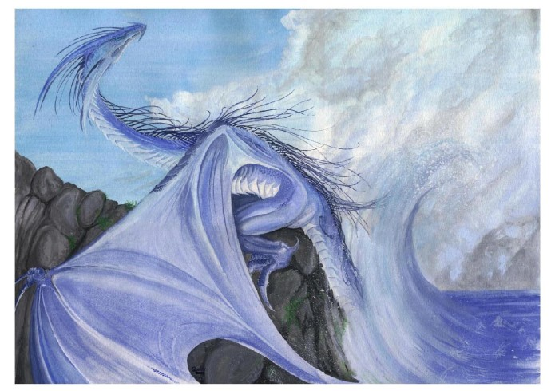

| Climate/Terrain | Scogliere |
| Frequency | Rare |
| Organization | solitay or clan |
| Activity Cycle | Any |
| Diet | Carnivoro |
| Intelligence | Average (8-10) +5 punti comb. bonus |
| Treasure | Special |
| Alignment | Chaotic Neutral |
| No. Appearing | 1 (famiglia) |
| Armor Class | 1 (base) |
| Movement | 12 Fl. 24 (C) Sw. 18 |
| Hit Dice | 12 (base) |
| Thac0 | 9 (at 12 Hit Dice) |
| No. of Attacks | 1 Morso + 2 Artigli + Special |
| Damage / Attacks | 1d8 /1d8 / 2d12 |
| Special Attacks | Special |
| Special Defenses | Variable |
| Magic Resistance | Variable |
| Size | G 33' base |
| Morale | Elite (15-16) |
| XP value | Variable |
Descrizione
I draghi delle scogliere
sono esseri di grande bellezza che vivono lungo le scogliere di tutta Arelia. Le
loro scaglie variano dal bianco azzurro del basso ventre ad un blu intenso delle
creste dorsali. Hanno possenti corna tortili sulla sommità del capo e una
doppia fila di creste spinate che partono dal centro del capo e giungono fino
alla coda. Le ali sono ampie e si congiungono al corpo dopo le zampe posteriori,
dandogli l'aspetto di una enorme manta. Hanno una possente muscolatura che gli
consente di volare, nuotare e arrampicarsi lungo le scogliere. I draghi delle
scogliere sono fedeli di Eram, e la leggenda vuole che siano suoi figli diretti.
Non si allontanano mai più di un giorno di volo mare, ciò accade solo in casi
eccezionali. Si
nutrono prevalentemente di pesce, ma anche balene o calamari giganti. I draghi
delle scogliere sono dotati di un apparato respiratorio misto con polmoni e
branchie (interne al collo) che permette loro di respirare sott'acqua e sopra la
superficie senza problema alcuno. La loro
indole e selvaggia e caotica. Sono piuttosto schivi e evitano il contatto con
l'uomo. Possono attaccare imbarcazioni o villaggi se infastiditi dal
comportamento degli esseri umani e delle altre razze civilizzate che non
rispettano l'ambiente marino. In quanto fedeli di Eram amano collezionare perle
e coralli. Le loro tane sono piene di
tesori, di cui molti razziati da relitti delle imbarcazioni colate a picco in fondo al
mare. Sono estremamente gelosi delle loro tane e non esitano ad attaccare chi si
avventuri in queste per difendere il proprio territorio.
I draghi delle scogliere parlano fra loro emettendo grida acutissima e
dall'incredibile frequenza udibili ad 1 km. di distanza in aria e fino a 5 km.
di distanza in acqua. Vi è inoltre il 5% per categoria di età che queste
creature parlino la lingua più comune della civiltà più vicina solitamente
insegnata loro dai chierici di Eram.
Combat
I draghi delle scogliere
preferiscono combattere nel loro elemento dove si sentono a loro agio e più
forti. In genere si inabissano confondendosi tra le onde e risultando quasi
invisibili, per poi colpire dal basso con possenti colpi le
imbarcazioni. I draghi delle scogliere sono
immuni ai danni da elettricità
e sfruttano tale loro immunità per
utilizzare il loro soffio mentre sono immersi, in questo modo rendendo
mortalmente elettrificata la zona d'acqua in cui si trovano uccidono i pesci e
le altre creature di cui poi si nutrono.
In quanto esseri fedeli di Eram costoro, raggiunta una determinata età possono
lanciare magie come i chierici
di questa divinità, costoro lanciano tali magie come se fossero un chierico di
livello pari 3 + la propria categoria
di età.
Breath Weapon/ Special Abilities
Il soffio dei draghi delle scogliere è rappresentato da una pioggia di saette elettriche. A differenza degli altri draghi il loro soffio non è unico ma è composto da una molteplicità di saette che possono colpire coloro si trovano dinanzi al drago (in un raggio di 90° di fronte allo stesso) fino a 15 metri di distanza dalle sue fauci. Il numero di saette elettriche lanciate dipende dalla categoria di età del drago ed il drago può distribuire le stesse su qualsiasi bersaglio si trovi a portata di tiro. Ognuna di queste saette provoca 1d3+1 danni da elettricità dimezzabili con un tiro salvezza contro breath weapon (è richiesto un unico tiro salvezza per il totale dei danni subito).
All'aumentare dell'età
i draghi delle scogliere acquisiscono poteri aggiuntivi (i poteri indicati nelle
rispettive categorie rappresentano il totale dei poteri speciali di un drago che
ha raggiunto quella determinata età):
Juvenile: 1/g
Electric Bite: Il drago
può decidere, dopo aver colpito con il morso, di elettrificare l'avversario con
una scossa elettrica provocando ulteriori 2d6 danni da elettricità, 1d6 se la
vittima supera un tiro salvezza contro raggio della morte.
Mature Adult: 2/g Electric
Bite; può lanciare la
magia Wind Wall (Wiz. 3rd)
1/g come un mago di
livello pari alla propria categoria di età;
Venerable: 3/g Electric
Bite; 2/g
Wind Wall (Wiz. 3rd); può
lanciare la magia Chain
Lightning (Wiz. 6th) 1/g come
un mago di livello pari alla propria categoria di età;
| Age | Body L. | Tail L. | AC | Breath W. | Spell Eram | MR | Tresure | XP value |
| 1 | M 6' | 3' | 4 | 1d8+1 | Nil | Nil | Nil | 3500 |
| 2 | L 12' | 6' | 3 | 2d8+2 | Nil | Nil | Nil | 4500 |
| 3 | H 22' | 12' | 2 | 3d8+3 | Nil | Nil | Nil | 6500 |
| 4 | G 33' | 18' | 1 | 4d8+4 | 1 | 10% | 1/2 H | 11000 |
| 5 | G 45' | 27' | 0 | 5d8+5 | 2 | 15% | H | 12000 |
| 6 | G 51' | 30' | -1 | 6d8+6 | 3 | 20% | H | 13000 |
| 7 | G 60' | 39' | -2 | 7d8+7 | 3 / 1 | 25% | H * 2 | 15000 |
| 8 | G 72' | 45' | -3 | 8d8+8 | 4 / 2 | 30% | H * 2 | 16000 |
| 9 | G 81' | 54' | -4 | 9d8+9 | 4 / 3 | 35% | H * 2 | 17000 |
| 10 | G 90' | 63' | -5 | 10d8+10 | 4 / 3 / 1 | 40% | H * 3 | 20000 |
| 11 | G 105' | 72' | -6 | 11d8+11 | 5 / 4 / 2 | 45% | H * 3 | 21000 |
| 12 | G 114' | 81' | -7 | 12d8+12 | 5 / 4 / 3 | 50% | H * 3 | 22000 |
Habitat/Society
I draghi delle scogliere vivono in caverne umide e vicine al mare. L'ingresso delle loro tane è sempre sommerso e ben mimetizzato, in genere da barriere di alghe o rocce che possono spostare al loro passaggio. Spesso l'ingresso delle tane è sorvegliato da branchi di squali, a causa dei resti di pesce ed altri animali che i draghi lasciano volontariamente in zona, affinché il branco non si discosti dalla tana. Vi è il 65 % che nelle immediate vicinanze dell'ingresso vi siano 1d3 squali comuni. Questi squali non attaccano mai i draghi riconoscendo in loro un predatore letale. I tunnel delle loro tane sono lunghi e procedono all'interno delle scogliere, diramandosi in più camere laterali. La superficie di queste è scivolosa per le alghe e irta di spuntoni rocciosi, sui quali è molto difficile procedere. La camera del tesoro è situata in profondità e in genere ricolma di perle, coralli, oro e gioielli. Questi sono gli oggetti più preziosi per i draghi in quanto non vengono deteriorati dalla salsedine marina. I draghi delle scogliere a differenza degli altri simili tendono a instaurare relazioni stabili e una volta che si sono scelti un compagno tendono a conservarlo per l'intera esistenza; nel 35% dei casi, infatti, le tane sono solite ospitare un maschio, una femmina e (20%) 1d4 uova e (25%) 1d2 cuccioli. Le femmine sono solite accoppiarsi solo con maschi di due o più categorie di età superiori (fatta eccezione per le femmine di categoria 10 e superiore). Questi draghi sono molto legati alla propria prole e ne seguono lo sviluppo fino alla categoria Juvenile, non appena i cuccioli acquisiscono questa categoria di età sono considerati maturi e sono costretti ad allontanarsi dalle proprie tane per cercare un proprio territorio di caccia. L'organizzazione sociale di queste creature è molto semplice, si basa su una famiglia ristretta e sul controllo del territorio di caccia che misura un raggio di circa 20 km.. Tollerano intrusioni nel loro territorio, ma non nelle vicinanze delle loro tane, sempre che siano sporadiche e non inficianti l'equilibrio del loro habitat, in caso contrario attaccheranno con violenza.
Ecology
L'alimentazione principale del drago delle scogliere è rappresentata da polpi giganti, di cui è particolarmente ghiotto. In genere il drago stordisce la sua preda con delle scariche elettriche e poi lo afferra con entrambi gli artigli e ne dilania la testa prima di divorarlo. Si ciba anche di alghe o di pesci, se particolarmente affamato anche di mammiferi marini come delfini o balene. Non attacca solitamente gli squali che ricambiano il favore intimoriti da questa creatura. Sono molto rari i casi in cui si dice che i draghi delle scogliere abbiano attaccato umani per cibarsene, infatti non amano mangiare creature terrestri. Spesso, però gli attacchi alle razze senzienti sono dovuti al cattivo ed imprevedibile carattere del drago che è infastidito dalla presenza di questi esseri e delle loro imbarcazioni, in altre circostanze, invece, i draghi attaccano i pescherecci o in rare occasioni le banchine portuali dei mercati del pesce per cibarsi dei pesci raccolti con le reti dai pescatori. In queste occasioni, se lasciati fare, non uccidono gli esseri umani ma se infastiditi non esitano a causare danni, ad uccidere ed a terrorizzare la causa del loro fastidio.
Mystical Resource Sourge
(Denti) Quantità: 1d3, Presenza 33% - Scuola di Magia:
Enchantment
- Qualità della Risorsa:
Uncommon.
Mystical Resource Sourge
(Scaglie) Quantità: 1 * Categoria, Presenza 33% - Effetto Particolare:
Resistenza all'Elettricità
- Qualità della Risorsa:
Uncommon.
Mystical Resource Sourge
(Ghiadola Elettrica) Quantità: 1, Presenza 10% * Categoria (max 95%) - Effetto Particolare:
Elettricità
- Qualità della Risorsa:
Rare.
Mystical Resource Sourge
(Lingua) Quantità: 1, Presenza 9% * Categoria (max 95%) - Scuola di Magia:
Enchantment
- Qualità della Risorsa:
Rare.
Mystical Resource Sourge
(Cuore di Drago) Quantità: 1, Presenza 7% * Categoria (max 95%) - Scuola di
Magia:
Enchantment
- Qualità della Risorsa:
Exotic.